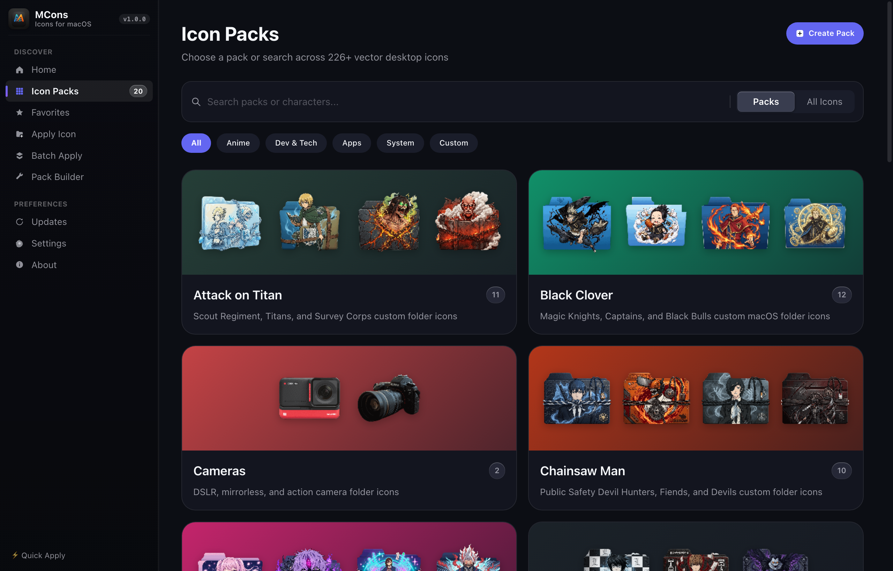
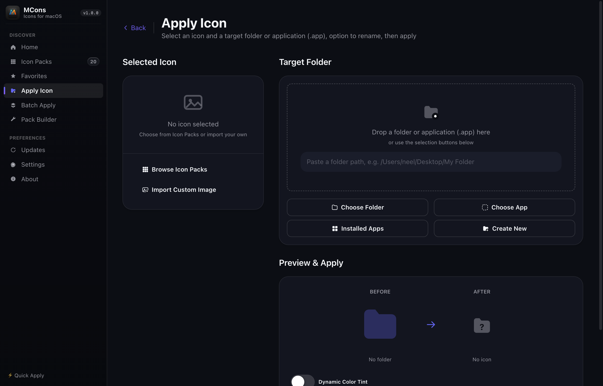
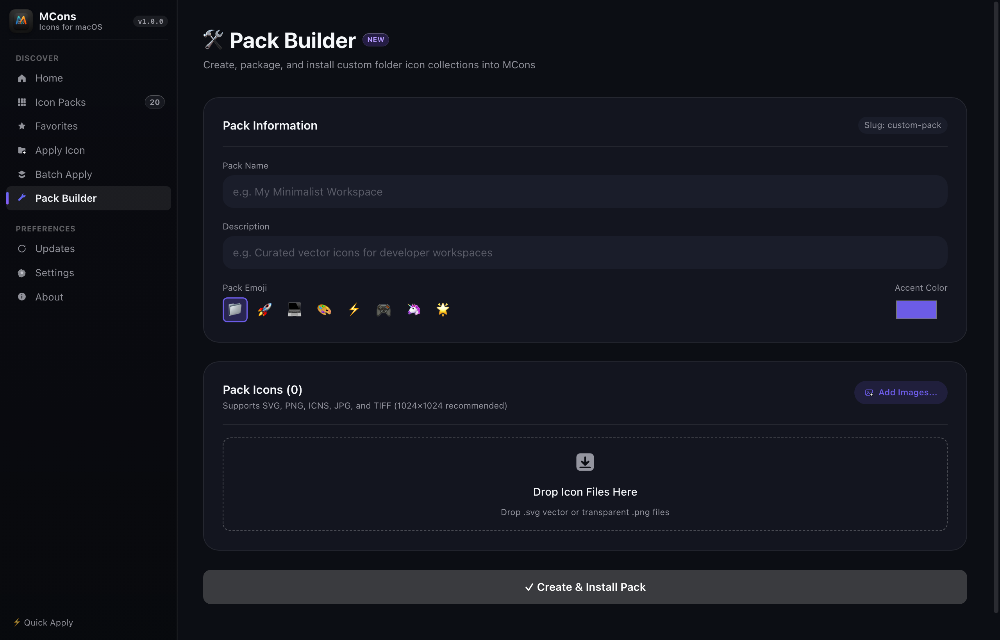
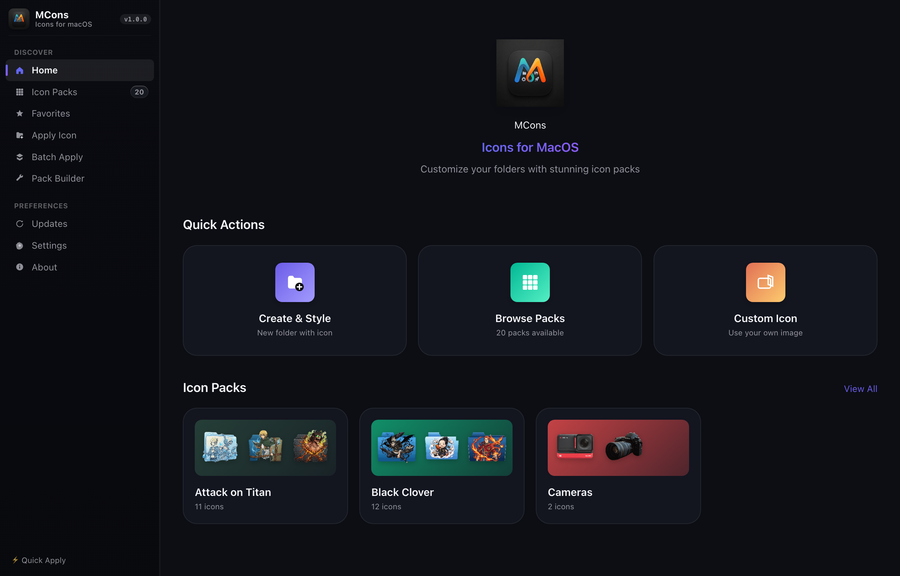

Custom folder icons,
engineered for your desktop.
Transform system directories with 240+ handcrafted vector icons and custom color tints. Apply in milliseconds via the native GUI or automate directory styling with a headless Rust CLI.
macOS
$
Windows Portable (.exe)
curl -fsSL https://raw.githubusercontent.com/neel0210/MCons/main/install.sh | bash

20 Curated Icon Packs

Folder Customization & Color Tinting Crisp Scalable Vector Grid
Crisp Scalable Vector Grid

Visual SVG/PNG Pack Builder
Recent Folders & Quick Apply
20 Curated Icon Packs
Folder Customization & Color Tinting
Crisp Scalable Vector Grid
Visual SVG/PNG Pack Builder
Recent Folders & Quick Apply